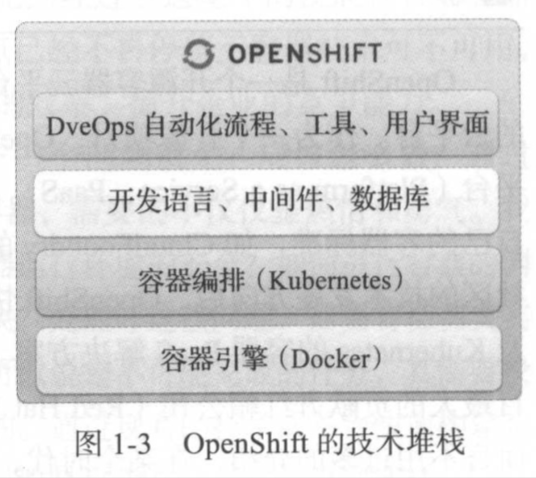
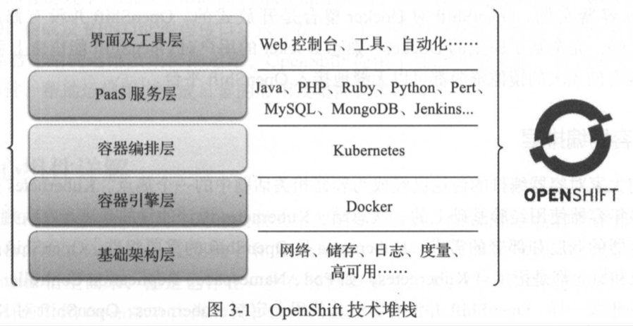
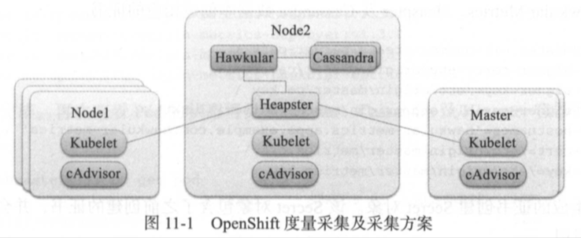
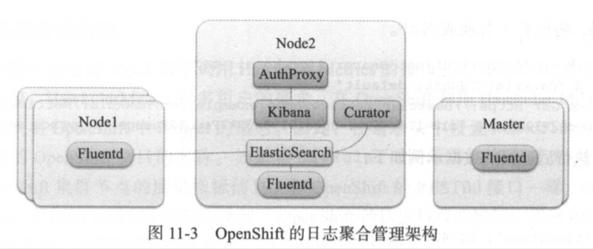

| Title | Date | Modified | Category |
|---|---|---|---|
| micros | 2019-05-29 12:00 | 2019-05-29 12:00 | micros |
1. OpenShift 3
1.1. 概念
1.1.1. Red Hat
- Red Hat就是开源软件商业模式的奠基人，而且是目前世界上最大的开源软件公司。
- 作为一个开源软件公司，red hat所有产品的企业版的源代码也是完全公开的。
- Red Hat是Kubernetes, Istio的主要贡献者之一。
1.1.2. OpenShift
- OpenShift是一个开源容器云平台，是一个基于主流的容器技术Docker及Kubernetes构建的云平台。
- 通过OpenShift这个平台，企业可以快速在内部网络中构建出一个多租户的云平台，在这朵云上提供应用开发，测试，部署，运维的各项服务（如图1-2所示）。
- OpenShift在一个平台上贯通开发，测试，部署，运维的流程，实现高度的自动化，满足应用持续集成及持续交付和部署的需求；满足企业及组织对容器管理，容器编排的需求。
- 通过OpenShift的灵活架构，企业可以以OpenShift作为核心，在其上搭建一个企业的DevOps引擎，推动企业的DevOps变革和转型。
容器引擎及容器编排组件是两项关键的技术，但还不能满足生产效率的要求。
OpenShift在Docker和k8s的基础上提供了各种功能，以满足业务应用，研发用户及运维用户在生产效率上的诉求。
- 应用开发框架及中间件
- 应用及服务目录
- 自动化流程及工具。
- 软件自定义网络
- 性能监控及日志管理
- 多用户接口
- 自动化集群部署及管理
OpenShift集成了原生的Kubernetes作为容器编排组件。OpenShift通过Kubernetes来管理容器集群中的机器节点及容器，为业务应用提供：
- 容器调度
- 弹性伸缩
- 异常自愈
- 持久化卷
- 服务发现
- 配置管理
K8s是一个容器编排工具，虽然提供了很多的功能，但只是一个工具。而OpenShift是一整套企业解决方案。
架构概览


核心组件

构建与部署自动化 CI/CD
企业部署
多环境单集群
多环境多集群
多数据中心
高可用
主控节点的高可用
度量与日志管理
度量采集

日志采集

1.1.3. 混合云
1.2. 演示
- 演示本地macos的OpenShift单节点集群
- 演示OpenShift的Web Dashboard
1.3. todos demo
TODO
1.4. 参考资料
1.4.1. GitHub
1.4.2. WebSite
1.4.3. Books
- 《开源容器云OpenShift 构建基于Kubernetes的企业应用云》